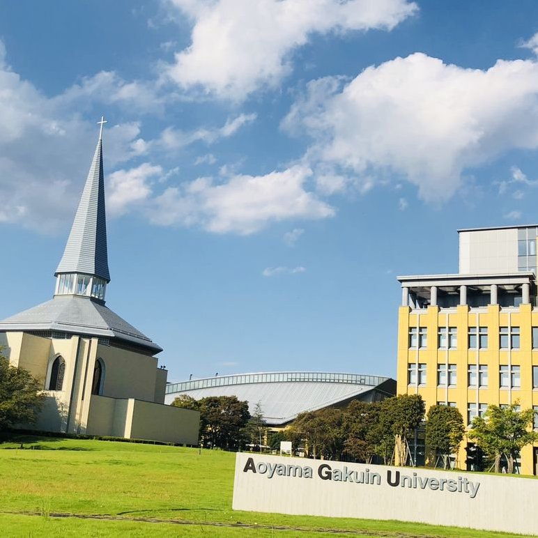
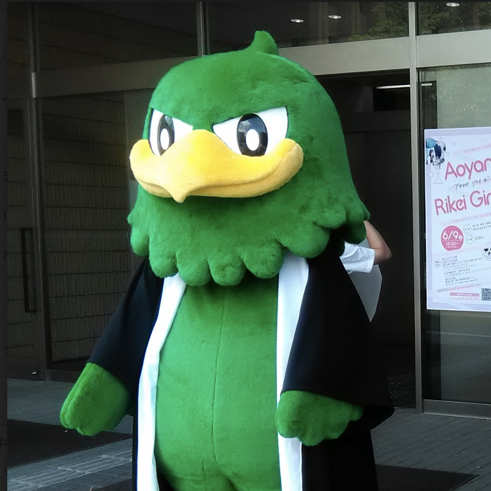

3つのポリシー 社会情報学部の3つのポリシーをご紹介いたします。 詳しく見る 学びの特徴とカリキュラム 社会情報学部の特色である3つの系からの展開コースなど、学びの特色とカリキュラムをご紹介いたします。 詳しく見る 主要科目の特長 社会情報学部の主要科目の特長をご紹介いたします。 詳しく見る  卒業要件等 社会情報学部の卒業研究についてご紹介いたします。 詳しく見る  取得可能な免許・資格 社会情報学部で取得可能な免許・資格をご紹介いたします。 詳しく見る
3つのポリシー ディプロマポリシー（卒業認定・学位授与の方針） ■知識・技能 現代社会を取り巻く「人間、社会、情報」に関わる広い知識を身につけている。 数理的素養、論理的思考、コミュニケーション能力および情報の活用について、その基礎となる知識・技能を身につけている。 ■思考力・判断力・表現力 現代社会を取り巻く「人間、社会、情報」が複雑に絡み合った問題について、それらが単一の専門領域だけでなく複数の専門領域からアプローチする必要性を理解している。 現代社会を取り巻く「人間、社会、情報」が複雑に絡み合った問題について、その要素となる一つ以上の専門領域について、その基礎を身につけ、自ら論理的に思考し、判断することができる。 現代社会を取り巻く「人間、社会、情報」が複雑に絡み合った問題を捉え、その問題解決に向けた取り組みについて、一定の方針を立てることができる。 ■意欲・関心・態度 「人間、社会、情報」に関わる広い知識をもって、社会問題に取り組むプロジェクトの一員になる意欲がある（チームワーク）。 「人間、社会、情報」に関わる広い知識をもって、持続的に学ぶ意欲がある(学び）。 カリキュラムポリシー（教育課程編成・実施の方針） 社会情報学科は、社会情報学部の人材育成目的、「人間の行動、経済活動を理解し、それらの疑問に解答できる人材、多様なデータを論理的に分析し、社会の疑問に解答できる人材を育成すること」、を達成するため、下記のような教育課程を編成する。 数理的素養、論理的思考、コミュニケーション能力および情報の高度な活用の4つの力をすべての学生必須のものと位置づけ、配置する。さらに、この素養を武器にして既存学問分野である心理・学習、経営・経済および情報・数理のいずれか、あるいは複数の領域に踏み込むことによって、これら既存の分野を俯瞰し、さらに新たな価値の創造を目指す。また、これらを進めるにあたり、より実践的なテーマによる演習を重視し、問題発見・解決に向けたトレーニングを重視した取組を行う。また、青山スタンダードの教養教育に加えて「日本語におけるコミュニケーション」を重視し、日本語文章作成の訓練、プレゼンテーションの基礎を含む科目を設置する。さらに、英語コミュニケーション能力を鍛えるために徹底したトレーニングを行う科目も設定する。分析能力の基礎となる「統計入門」、社会・人間・情報を解明するための「基礎数学」、それらを有効に活用するための基本となる「情報科学」「コンピュータ」の基礎を学ぶ。 以上より、「人間、社会、情報」に関わる広い知識を持ち、社会問題に取り組むプロジェクトの一員になり、持続的に学ぶ意欲をもつ学生を育成する。 アドミッションポリシー（入学者受入れの方針） ■知識・技能 国語、外国語、地理歴史、公民、数学などについて、内容を理解し、高等学校卒業相当の知識を有している。 ■思考力・判断力・表現力 物事を多面的かつ論理的に考察し、自分の考えをまとめることができる。 ■意欲・関心・態度 学科の特徴を理解した上で、「人間、社会、情報」などに興味関心を持ち、それを大学における勉学を通じて追求し、専門知識や専門スキルを活用して社会のために役立てる意欲がある。 学びの特色とカリキュラム 学びの特色 ■知識・技能 現代社会を取り巻く「人間、社会、情報」に関わる広い知識を身につけている。 数理的素養、論理的思考、コミュニケーション能力および情報の活用について、その基礎となる知識・技能を身につけている。 ■思考力・判断力・表現力 現代社会を取り巻く「人間、社会、情報」が複雑に絡み合った問題について、それらが単一の専門領域だけでなく複数の専門領域からアプローチする必要性を理解している。 現代社会を取り巻く「人間、社会、情報」が複雑に絡み合った問題について、その要素となる一つ以上の専門領域について、その基礎を身につけ、自ら論理的に思考し、判断することができる。 現代社会を取り巻く「人間、社会、情報」が複雑に絡み合った問題を捉え、その問題解決に向けた取り組みについて、一定の方針を立てることができる。 ■意欲・関心・態度 「人間、社会、情報」に関わる広い知識をもって、社会問題に取り組むプロジェクトの一員になる意欲がある（チームワーク）。 「人間、社会、情報」に関わる広い知識をもって、持続的に学ぶ意欲がある(学び）。 授業内容 こちらからご覧ください ←クリック 基礎科目 ・イングリッシュコミュニケーション ・時事英語 ・コンピュータ実習 ・社会数理入門 ・経済数学 ・統計入門 ・社会統計 ・社会調査法 ・データ分析 ・コミュニケーション基礎 ・プロジェクトマネジメント 英語、コンピュータ、数学（統計学を含む）の素養は、すべての学びの基礎となります。 これらは、社会に出てからも非常に有用な基礎力となりますので、いくつかの必修科目を学ぶことで身につけていきます。これらを学ぶ科目に加え、社会調査やデータ分析を学ぶ科目、情報コミュニケーションの基礎を学ぶ科目、プロジェクトマネジメントを学ぶ科目などが、基礎科目として設置されています。 異分野融合の姿を学ぶ「フルリエゾン」科目 ・ソリューション入門 ・社会情報体験演習 ・ソリューション応用 社会情報学部を卒業するとき、あなたはどのような人材になっているのでしょうか？そのイメージをもってもらうための科目が、1年次と2年次の必修科目として設置されています。 「ソリューション入門」では講義形式で異分野融合の姿を学びます。「社会情報体験演習」では、演習を通して4年間でどのようなことを学び、何ができるようになるかを体感します。「ソリューション応用」では、複数の学術分野を背景にして活躍する社会人ゲストによる講演が行われます。 ・経済学概論 ・情報科学概論 ・人間科学概論 学際領域での学習を始める前に、それぞれの学術分野の概要を理解しておく必要があります。社会、情報、人間という3分野の基礎を1年次に学びます。 社会、情報、人間分野の「エリア科目」 社会、情報、人間という3分野の基礎を1年次に学んだあと、それぞれの分野でさらに学習を進めるための科目が設置されています。ひとつの分野だけではなく、複数の分野の科目を履修する必要があります。知識の幅を広げ、異分野融合の基盤とします。 社会エリア科目 ・マクロ経済学 ・ミクロ経済学 ・エネルギー経済論 ・国際ファイナンス ・コーポレートガバナンス 情報エリア科目 ・プログラミング基礎 ・データベース基礎 ・情報システム計画 ・ウェブコンテンツ作成演習 ・ネットワーク構築演習 人間エリア科目 ・認知心理学 ・学習心理学 ・文化心理学 ・発達心理学 ・スポーツと心の科学！！！！ 学際領域の「リエゾン」科目 「社会・情報コース」「社会・人間コース」「人間・情報コース」のそれぞれにおいて、学際領域を学ぶ「リエゾン」科目が設置されています。 「社会・情報コース」のリエゾン科目 ・情報社会論 ・情報産業論 ・情報リスク論 ・広報論 ・リスクマネジメント論 ・システム分析・設計基礎 ・情報倫理 ・情報化社会と法 「社会・人間コース」のリエゾン科目 ・合理的思考と社会行動 ・社会心理学 ・ワークショップデザイン ・社会学 ・コミュニケーション心理学 ・ジャーナリズム ・意思決定理論と実践 ・リーダーシップの理論と実践 「人間・情報コース」のリエゾン科目 ・マルチメディア学習論 ・ネット社会とコミュニティ ・ヒューマンインタフェース ・メディアコミュニケーション ・メディア論 ・情報デザイン ・メディアコンテンツ制作 ・コンテンツマネジメント〜〜！！
学びの特色とカリキュラム 学びの特色 ■知識・技能 現代社会を取り巻く「人間、社会、情報」に関わる広い知識を身につけている。 数理的素養、論理的思考、コミュニケーション能力および情報の活用について、その基礎となる知識・技能を身につけている。 ■思考力・判断力・表現力 現代社会を取り巻く「人間、社会、情報」が複雑に絡み合った問題について、それらが単一の専門領域だけでなく複数の専門領域からアプローチする必要性を理解している。 現代社会を取り巻く「人間、社会、情報」が複雑に絡み合った問題について、その要素となる一つ以上の専門領域について、その基礎を身につけ、自ら論理的に思考し、判断することができる。 現代社会を取り巻く「人間、社会、情報」が複雑に絡み合った問題を捉え、その問題解決に向けた取り組みについて、一定の方針を立てることができる。 ■意欲・関心・態度 「人間、社会、情報」に関わる広い知識をもって、社会問題に取り組むプロジェクトの一員になる意欲がある（チームワーク）。 「人間、社会、情報」に関わる広い知識をもって、持続的に学ぶ意欲がある(学び）。 授業内容 こちらからご覧ください ←クリック 基礎科目 ・イングリッシュコミュニケーション ・時事英語 ・コンピュータ実習 ・社会数理入門 ・経済数学 ・統計入門 ・社会統計 ・社会調査法 ・データ分析 ・コミュニケーション基礎 ・プロジェクトマネジメント 英語、コンピュータ、数学（統計学を含む）の素養は、すべての学びの基礎となります。 これらは、社会に出てからも非常に有用な基礎力となりますので、いくつかの必修科目を学ぶことで身につけていきます。これらを学ぶ科目に加え、社会調査やデータ分析を学ぶ科目、情報コミュニケーションの基礎を学ぶ科目、プロジェクトマネジメントを学ぶ科目などが、基礎科目として設置されています。 異分野融合の姿を学ぶ「フルリエゾン」科目 ・ソリューション入門 ・社会情報体験演習 ・ソリューション応用 社会情報学部を卒業するとき、あなたはどのような人材になっているのでしょうか？そのイメージをもってもらうための科目が、1年次と2年次の必修科目として設置されています。 「ソリューション入門」では講義形式で異分野融合の姿を学びます。「社会情報体験演習」では、演習を通して4年間でどのようなことを学び、何ができるようになるかを体感します。「ソリューション応用」では、複数の学術分野を背景にして活躍する社会人ゲストによる講演が行われます。 ・経済学概論 ・情報科学概論 ・人間科学概論 学際領域での学習を始める前に、それぞれの学術分野の概要を理解しておく必要があります。社会、情報、人間という3分野の基礎を1年次に学びます。 社会、情報、人間分野の「エリア科目」 社会、情報、人間という3分野の基礎を1年次に学んだあと、それぞれの分野でさらに学習を進めるための科目が設置されています。ひとつの分野だけではなく、複数の分野の科目を履修する必要があります。知識の幅を広げ、異分野融合の基盤とします。 社会エリア科目 ・マクロ経済学 ・ミクロ経済学 ・エネルギー経済論 ・国際ファイナンス ・コーポレートガバナンス 情報エリア科目 ・プログラミング基礎 ・データベース基礎 ・情報システム計画 ・ウェブコンテンツ作成演習 ・ネットワーク構築演習 人間エリア科目 ・認知心理学 ・学習心理学 ・文化心理学 ・発達心理学 ・スポーツと心の科学！！！！ 学際領域の「リエゾン」科目 「社会・情報コース」「社会・人間コース」「人間・情報コース」のそれぞれにおいて、学際領域を学ぶ「リエゾン」科目が設置されています。 「社会・情報コース」のリエゾン科目 ・情報社会論 ・情報産業論 ・情報リスク論 ・広報論 ・リスクマネジメント論 ・システム分析・設計基礎 ・情報倫理 ・情報化社会と法 「社会・人間コース」のリエゾン科目 ・合理的思考と社会行動 ・社会心理学 ・ワークショップデザイン ・社会学 ・コミュニケーション心理学 ・ジャーナリズム ・意思決定理論と実践 ・リーダーシップの理論と実践 「人間・情報コース」のリエゾン科目 ・マルチメディア学習論 ・ネット社会とコミュニティ ・ヒューマンインタフェース ・メディアコミュニケーション ・メディア論 ・情報デザイン ・メディアコンテンツ制作 ・コンテンツマネジメント〜〜！！